Carving-Score für jede Abfahrt
Jeder Schwung gemessen: Kurven, Rhythmus, Kantwinkel-Schätzung und Symmetrie – das iPhone bleibt in der Jacke. Am Lift ein gesprochener Tipp.
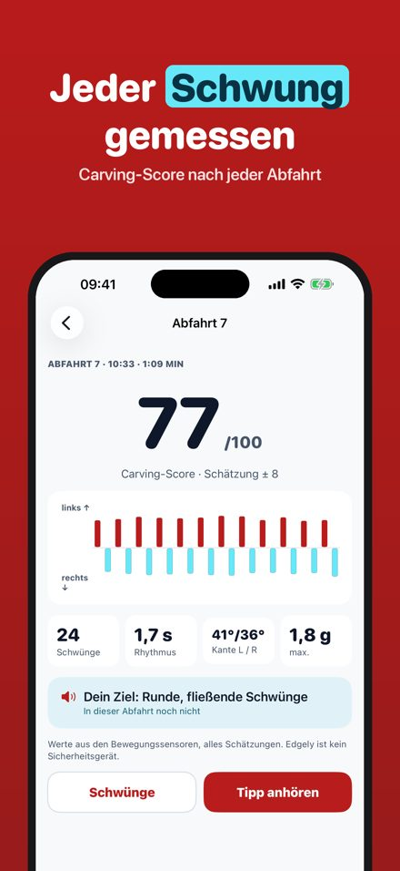
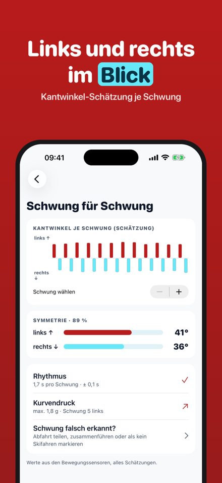
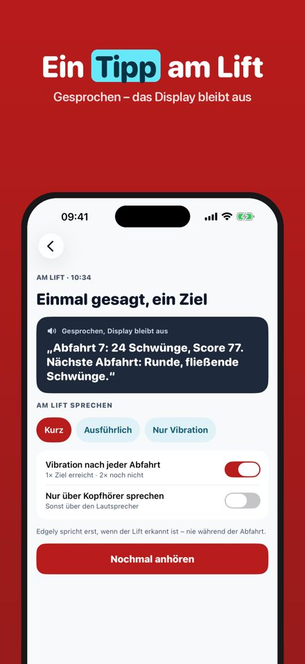
Edgely misst deine Skitechnik mit den Bewegungssensoren deines iPhones. Starte den Skitag, steck das Handy in die Jackentasche und fahr los: Edgely trennt Abfahrten und Lifte automatisch und sagt dir am Lift, wie die letzte Abfahrt war – mit genau einem Ziel für die nächste.
Jeden Tag werden 3 Abfahrten ohne Kauf vollständig analysiert; Skitag, Lift-Erkennung und Tagesübersicht laufen immer. Edgely Plus ist ein Einmalkauf: alle Abfahrten, gesprochene Ziele und Saisonverlauf. Kein Abo.
Edgely ist kein Sicherheitsgerät. Alle Winkel und Werte sind Schätzungen aus Bewegungssensoren. Schau während der Fahrt nicht aufs Display: Hinweise kommen am Lift per Stimme oder Vibration. Fahr immer kontrolliert und nach den Pistenregeln.
Terms of Use (EULA): https://www.apple.com/legal/internet-services/itunes/dev/stdeula/
Carving e curve a ogni discesa
Ogni curva misurata: numero di curve, ritmo, stima dell’angolo di spigolo e simmetria – l’iPhone resta in giacca. Allo skilift un consiglio a voce.
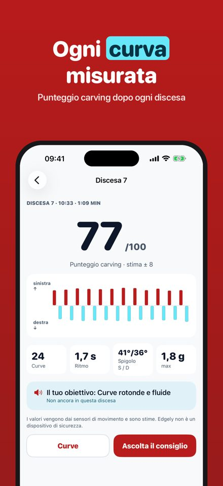
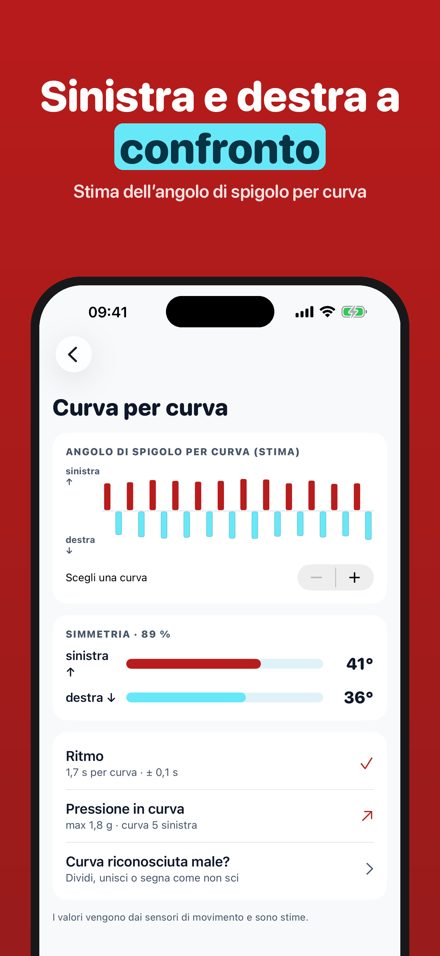
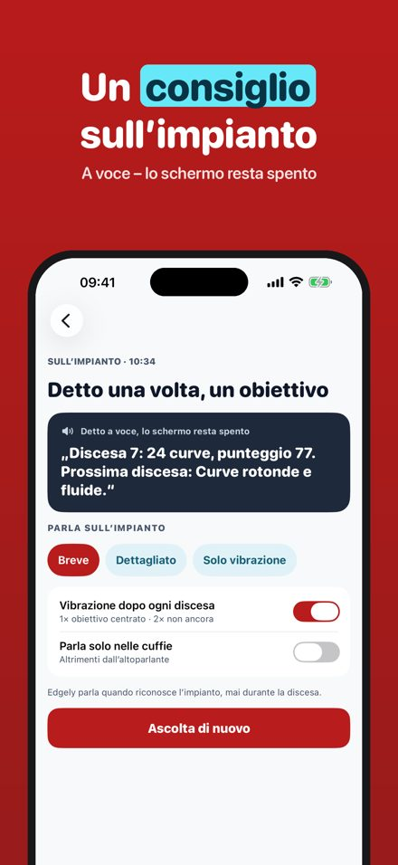
Edgely misura la tua tecnica sugli sci con i sensori di movimento del tuo iPhone. Avvia la giornata, metti il telefono in tasca e scia: Edgely separa da solo discese e impianti e allo skilift ti dice com’è andata l’ultima discesa, con un solo obiettivo per la prossima.
Ogni giorno 3 discese vengono analizzate per intero senza acquisto; giornata, riconoscimento degli impianti e riepilogo del giorno funzionano sempre. Edgely Plus è un acquisto unico: tutte le discese, obiettivi a voce e progressi della stagione. Nessun abbonamento.
Edgely non è un dispositivo di sicurezza. Angoli e valori sono stime dei sensori di movimento. Non guardare lo schermo mentre scii: i consigli arrivano allo skilift a voce o con una vibrazione. Scia sempre con prudenza e rispetta le regole delle piste.
Terms of Use (EULA): https://www.apple.com/legal/internet-services/itunes/dev/stdeula/
Ton carving, virage par virage
Chaque virage mesuré : nombre de virages, rythme, angle de carre estimé et symétrie – l’iPhone reste dans la veste. Un conseil à voix haute au télésiège.
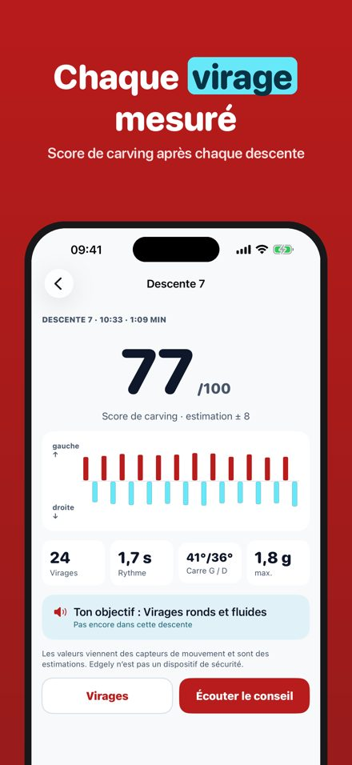
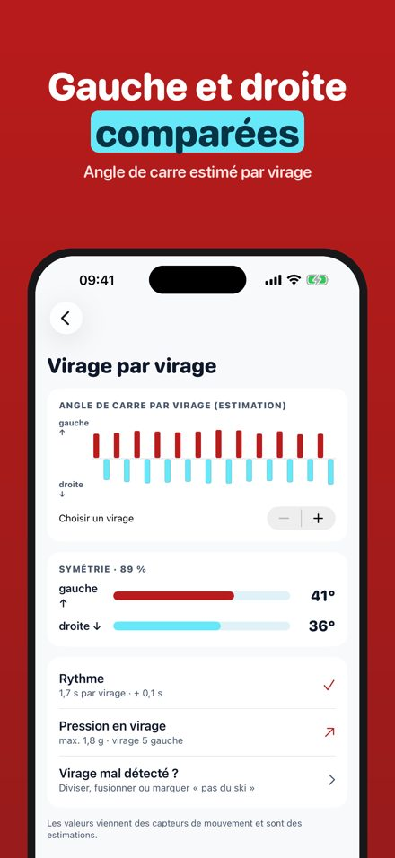
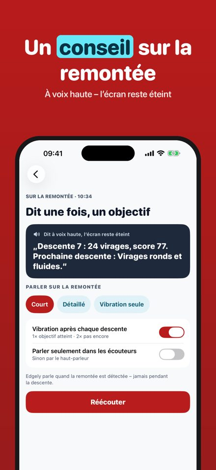
Edgely mesure ta technique de ski avec les capteurs de mouvement de ton iPhone. Lance ta journée, glisse le téléphone dans ta poche et skie : Edgely sépare seul descentes et remontées, puis te dit au télésiège comment s’est passée la dernière descente, avec un seul objectif pour la suivante.
Chaque jour, 3 descentes sont analysées en entier sans achat ; la journée, la détection des remontées et le bilan du jour fonctionnent toujours. Edgely Plus est un achat unique : toutes les descentes, objectifs à voix haute et progrès de la saison. Sans abonnement.
Edgely n’est pas un dispositif de sécurité. Les angles et valeurs sont des estimations des capteurs de mouvement. Ne regarde pas l’écran en skiant : les conseils arrivent au télésiège, à voix haute ou par vibration. Skie toujours en maîtrise et respecte les règles des pistes.
Terms of Use (EULA): https://www.apple.com/legal/internet-services/itunes/dev/stdeula/
Ocena carvingu każdego zjazdu
Każdy skręt zmierzony: liczba skrętów, rytm, szacowany kąt krawędziowania i symetria – iPhone zostaje w kurtce. Na wyciągu jedna wskazówka głosem.
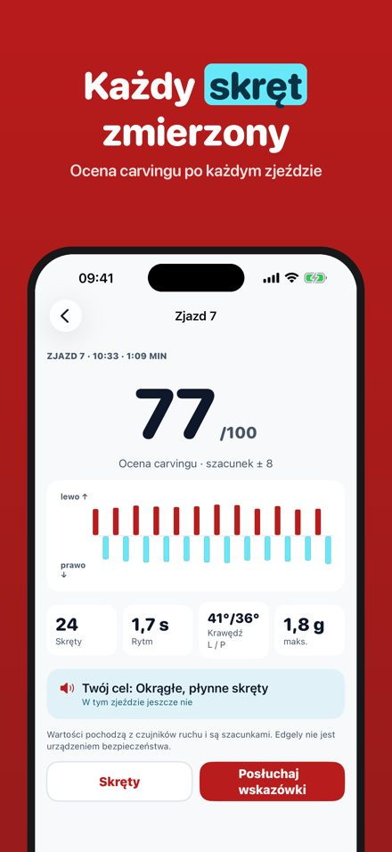
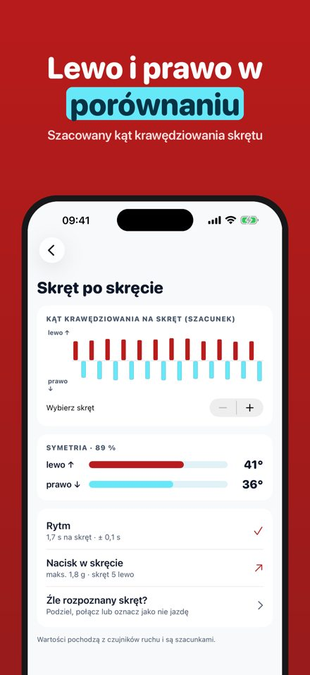
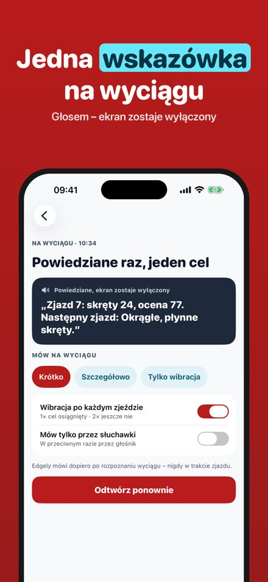
Edgely mierzy Twoją technikę jazdy na nartach czujnikami ruchu Twojego iPhone’a. Rozpocznij dzień na stoku, schowaj telefon do kieszeni i jedź: Edgely sam rozróżnia zjazdy i wyciągi, a na wyciągu mówi, jak poszedł ostatni zjazd – z jednym celem na następny.
Każdego dnia 3 zjazdy są w pełni analizowane bez zakupu; dzień na stoku, rozpoznawanie wyciągów i podsumowanie dnia działają zawsze. Edgely Plus to jednorazowy zakup: wszystkie zjazdy, cele głosem i postępy w sezonie. Bez subskrypcji.
Edgely nie jest urządzeniem bezpieczeństwa. Kąty i wartości są szacunkami z czujników ruchu. Nie patrz na ekran podczas jazdy: wskazówki przychodzą na wyciągu, głosem lub wibracją. Jeźdź zawsze pod kontrolą i zgodnie z zasadami na stoku.
Terms of Use (EULA): https://www.apple.com/legal/internet-services/itunes/dev/stdeula/
Hodnocení carvingu každé jízdy
Každý oblouk změřený: počet oblouků, rytmus, odhad úhlu hrany a symetrie – iPhone zůstává v bundě. Na vleku jeden tip hlasem.
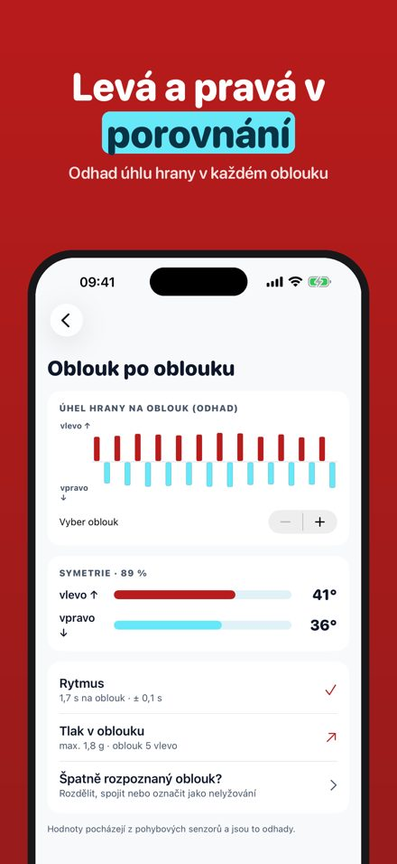
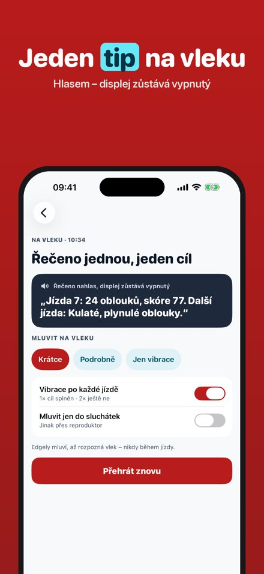
Edgely měří tvoji lyžařskou techniku pohybovými senzory tvého iPhonu. Spusť lyžařský den, dej telefon do kapsy a jeď: Edgely sám rozliší jízdy a vleky a na vleku ti řekne, jak dopadla poslední jízda – s jediným cílem na tu další.
Každý den jsou bez nákupu plně analyzovány 3 jízdy; lyžařský den, rozpoznání vleků a přehled dne fungují vždy. Edgely Plus je jednorázový nákup: všechny jízdy, cíle hlasem a pokrok za sezónu. Bez předplatného.
Edgely není bezpečnostní zařízení. Úhly a hodnoty jsou odhady z pohybových senzorů. Při jízdě se nedívej na displej: tipy přicházejí na vleku hlasem nebo vibrací. Jezdi vždy pod kontrolou a podle pravidel na sjezdovce.
Terms of Use (EULA): https://www.apple.com/legal/internet-services/itunes/dev/stdeula/